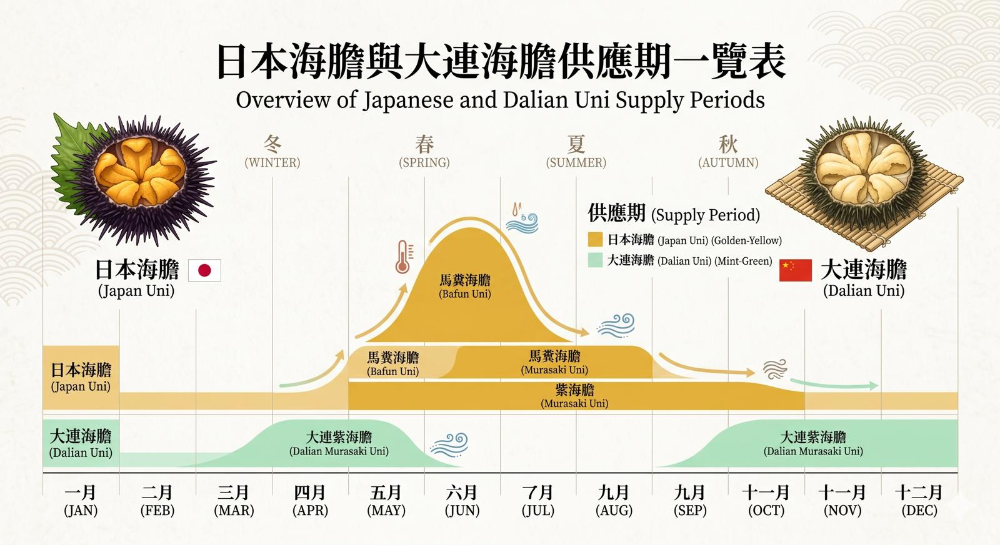

🇯🇵 日本海膽 Japan Uni
殿堂級享受 · 無可取代
賣點：殿堂級享受，地位無可取代。
味道：層次豐富，鮮甜味極之濃郁，餘韻悠長。
口感：質感細滑，入口即溶，陣陣海水清甜味隨即湧出。
推薦：高級壽司店、刺身拼盤，追求極致鮮味嘅食客首選。
豐洲直送 ✈︎｜大連優質貨源 🚢
【海和】專業供應各類海膽，由日本豐洲市場每日飛機直送，到高性價比嘅大連貨源一應俱全。
我哋明白唔同餐廳有唔同定位，所以準備咗多種級數同規格，無論係高級壽司店要搵頂級板膽，定係居酒屋要業務用系列，我哋都穩定供貨，滿足你嘅成本同質素要求！
好多客人都會問：「日本膽同大連膽點樣揀？」其實兩者各有千秋，最緊要係睇你嘅料理用途。
賣點：殿堂級享受，地位無可取代。
味道：層次豐富，鮮甜味極之濃郁，餘韻悠長。
口感：質感細滑，入口即溶，陣陣海水清甜味隨即湧出。
推薦：高級壽司店、刺身拼盤，追求極致鮮味嘅食客首選。
賣點：性價比之王，貨源穩定。
味道：較為清淡、鮮甜，層次冇日本膽深，但勝在夠晒清新。
口感：顆粒感較明顯，肉質紮實。
推薦：居酒屋、海膽丼、意粉或創意料理，可以大啖大啖食都唔心痛！
除咗產地，海膽嘅種類都係關鍵！市面上最常見嘅係呢兩款：
特徵：顏色偏橙紅色，體型較細，但味道最「霸道」。
口感：味濃甘甜，帶有一種厚實嘅奶油感。
評價：如果你鍾意濃郁、重口味嘅鮮甜，馬糞海膽一定係你嘅飛佛。
特徵：顏色偏淺黃色，瓣塊明顯較大，望落好體面。
口感：味道優雅清甜，口感好似絲綢咁滑。
評價：講究平衡感同清新味道嘅老饕，通常會更鍾意紫海膽嘅清雅。
